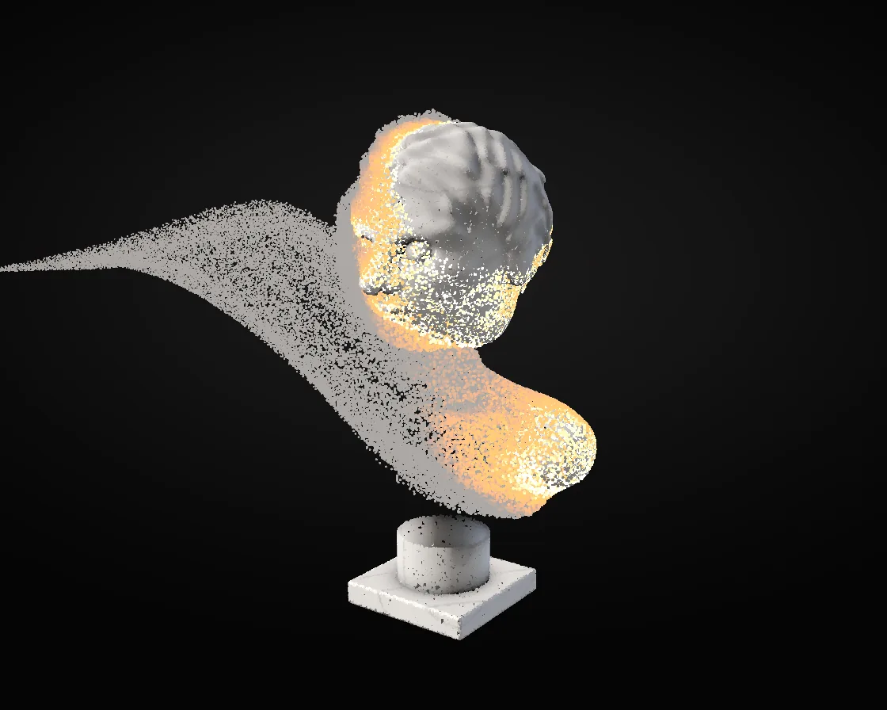

Dust to the wind
Dust to the wind is a WebGL effect: SDF surface sampled by random rays, dissolved point by point. One plain JavaScript file with no dependencies; add it with npx motion-library add dust-bust.

Open it live, tune it and copy the code
What is Dust to the wind?
A marble bust burns away into wind-blown dust, then reassembles on its socle.
How does Dust to the wind work?
The bust is an SDF of smooth-min features; the GPU samples 150,000 surface points by casting uniformly spread rays, each storing normal and occlusion.
How do I add Dust to the wind to my website?
- In your project folder, run
npx motion-library add dust-bust. It writesanimations/dust-bust.js. Needs Node 18 or newer. - Import it and call it with a container element that has a size:
import fx from './animations/dust-bust.js'; const stop = fx(document.querySelector('#hero')); - Call
stop()to clean up, for example when a component unmounts.
Every setting below is also a flag, so you can install it already tuned: npx motion-library add dust-bust --points 250000.
What settings can I tweak?
| Setting | Flag | Default | Range | Step |
|---|---|---|---|---|
| Points | --points | 150000 | 30000 to 250000 | 10000 |
| Wind | --wind | 1 | 0.3 to 2.5 | 0.1 |
| Speed | --speed | 1 | 0.4 to 2 | 0.1 |
Specifications
- Renderer
- WebGL
- Category
- Chrome & 3D
- Dependencies
- None
- File size
- 18.1 KB, unminified
- Interactive
- No: it plays on its own
- Reduced motion
- Plays the same for everyone
- Licence
- MIT-0: use it anywhere, no credit needed
Source code
// Dust to the wind: a classical marble bust, a hundred and fifty thousand points on its surface, comes apart into
// glowing dust that the wind carries off; then the dust is called back and the bust stands whole again on its socle.
// The bust is a signed distance field: a skull and a narrower face, the jaw, chin, cheekbones and brow, eye sockets
// with a statue's blank eyes, a nose with its wings and nostrils, lips, ears, a cap of curls, the neck, collarbones and
// a chest cut flat, all run together with smooth minimums. The GPU samples its surface once: it sends random straight
// lines through it (lines spread evenly over every direction land evenly on a surface) and keeps where each one first
// lands, the normal there, how enclosed the spot is (ambient occlusion) and a vein of the marble. After that every
// point is lit like stone, and a dissolving front sweeps across from one shoulder: each point it passes flares like an
// ember, breaks loose into a swirling wind and cools to grey.
const PARAMS = { points: 150000, wind: 1, speed: 1 };
export default function (stage) {
const canvas = document.createElement('canvas');
canvas.style.cssText = 'position:absolute;inset:0;width:100%;height:100%;display:block';
stage.append(canvas);
const gl = canvas.getContext('webgl2', { antialias: true });
if (!gl) { stage.textContent = 'This needs WebGL2.'; return () => canvas.remove(); }
const sh = (type, src) => { const s = gl.createShader(type); gl.shaderSource(s, src); gl.compileShader(s); if (!gl.getShaderParameter(s, gl.COMPILE_STATUS)) throw new Error(gl.getShaderInfoLog(s)); return s; };
const prog = (vs, fs) => {
const p = gl.createProgram(); gl.attachShader(p, sh(gl.VERTEX_SHADER, vs)); gl.attachShader(p, sh(gl.FRAGMENT_SHADER, fs)); gl.linkProgram(p);
if (!gl.getProgramParameter(p, gl.LINK_STATUS)) throw new Error(gl.getProgramInfoLog(p));
const u = {}; for (let i = 0, n = gl.getProgramParameter(p, gl.ACTIVE_UNIFORMS); i < n; i++) { const nm = gl.getActiveUniform(p, i).name; u[nm] = gl.getUniformLocation(p, nm); }
return { p, u };
};
const qv = gl.createVertexArray(); gl.bindVertexArray(qv); gl.bindBuffer(gl.ARRAY_BUFFER, gl.createBuffer());
gl.bufferData(gl.ARRAY_BUFFER, new Float32Array([-1, -1, 3, -1, -1, 3]), gl.STATIC_DRAW); gl.enableVertexAttribArray(0); gl.vertexAttribPointer(0, 2, gl.FLOAT, false, 0, 0);
// 1. the bust, and one pass that samples its surface: each pixel of a 1024-wide target is one random line
const BMIN = [-1.2, -1.1, -0.9], BMAX = [1.2, 1.8, 0.9];
const SDF = `
const vec3 CEN = vec3(0, .3, 0); const float RB = 1.85;
float sdE(vec3 p, vec3 c, vec3 r) { vec3 q = (p - c) / r; float k0 = length(q), k1 = length(q / r); return k0 * (k0 - 1.) / max(k1, 1e-5); }
float smin(float a, float b, float k) { float h = clamp(.5 + .5 * (b - a) / k, 0., 1.); return mix(b, a, h) - k * h * (1. - h); }
float smax(float a, float b, float k) { return -smin(-a, -b, k); }
float sdCap(vec3 p, vec3 a, vec3 b, float r) { vec3 pa = p - a, ba = b - a; return length(pa - ba * clamp(dot(pa, ba) / dot(ba, ba), 0., 1.)) - r; }
float sdCone(vec3 p, vec3 a, vec3 b, float r1, float r2) { // a capsule whose ends differ in radius
vec3 ba = b - a; float l2 = dot(ba, ba), rr = r1 - r2, a2 = l2 - rr * rr, il2 = 1. / l2;
vec3 pa = p - a; float y = dot(pa, ba), z = y - l2; vec3 xv = pa * l2 - ba * y; float x2 = dot(xv, xv), y2 = y * y * l2, z2 = z * z * l2, k = sign(rr) * rr * rr * x2;
if (sign(z) * a2 * z2 > k) return sqrt(x2 + z2) * il2 - r2;
if (sign(y) * a2 * y2 < k) return sqrt(x2 + y2) * il2 - r1;
return (sqrt(x2 * a2 * il2) + y * rr) * il2 - r1;
}
float bust(vec3 p) {
float bb = length((p - CEN) / vec3(1.05, 1.42, .8)) - 1.; if (bb > .15) return bb * .7; // far away: the bounding egg
vec3 q = vec3(abs(p.x), p.yz); // the face is symmetric
float d = sdE(p, vec3(0, 1.08, -.06), vec3(.45, .5, .54)); // skull
d = smin(d, sdE(p, vec3(0, .83, .1), vec3(.36, .44, .42)), .18); // face
d = smin(d, sdE(q, vec3(.25, .66, .04), vec3(.13, .16, .22)), .12); // the angles of the jaw
d = smin(d, sdE(p, vec3(0, .52, .27), vec3(.15, .12, .14)), .12); // chin
d = smin(d, sdE(q, vec3(.24, .91, .3), vec3(.12, .08, .1)), .08); // cheekbones
d = smin(d, sdE(p, vec3(0, 1.12, .37), vec3(.33, .07, .11)), .08); // brow
d = smax(d, -sdE(q, vec3(.155, 1., .47), vec3(.105, .062, .1)), .05); // eye sockets
d = smin(d, length(q - vec3(.155, 1., .385)) - .08, .02); // a statue's blank eyes
d = smin(d, sdCone(p, vec3(0, 1.04, .46), vec3(0, .86, .6), .042, .06), .04); // nose
d = smin(d, sdE(q, vec3(.055, .845, .53), vec3(.046, .04, .045)), .03); // its wings
d = smax(d, -sdE(q, vec3(.032, .815, .585), vec3(.02, .013, .022)), .01); // nostrils
d = smin(d, sdE(p, vec3(0, .727, .505), vec3(.12, .036, .05)), .035); // upper lip
d = smin(d, sdE(p, vec3(0, .672, .49), vec3(.1, .038, .05)), .035); // lower lip
d = smax(d, -sdE(p, vec3(0, .698, .548), vec3(.115, .007, .04)), .01); // the line between them
d = smin(d, sdE(q, vec3(.45, .97, -.05), vec3(.05, .15, .1)), .04); // ears
// hair: a cap over the skull behind a hairline that runs from the forehead past the ears to the nape, in curls
float hair = smax(sdE(p, vec3(0, 1.13, -.1), vec3(.49, .52, .58)), (1.2 - .55 * smoothstep(.35, -.55, p.z)) - p.y, .06);
hair -= .028 * sin(p.x * 23. + 3. * sin(p.y * 9.)) * sin(p.y * 21. + 3. * sin(p.z * 8.)) * sin(p.z * 22. + 3. * sin(p.x * 7.));
d = smin(d, hair * .6, .04);
d = smin(d, sdCone(p, vec3(0, .6, -.06), vec3(0, -.12, -.02), .19, .25), .1); // neck
// shoulders and chest, cut the classical way: a curve that rises toward the arms, and straight down through them
float torso = sdE(p, vec3(0, -.36, -.06), vec3(.62, .48, .33));
torso = smin(torso, sdE(q, vec3(.6, -.06, -.07), vec3(.29, .21, .27)), .2); // shoulders
torso = smin(torso, sdCap(q, vec3(.1, .22, -.1), vec3(.58, .04, -.08), .1), .15); // the slope from neck to shoulder
torso = smin(torso, sdE(q, vec3(.22, -.2, .17), vec3(.25, .17, .13)), .12); // pectorals
torso = smax(smax(torso, -.63 + .3 * q.x * q.x - p.y, .03), q.x - .86, .05);
d = smin(d, torso, .1);
d = smin(d, sdCap(q, vec3(.08, .0, .25), vec3(.46, .07, .15), .02), .1); // collarbones, just under the skin
float ped = max(length(p.xz) - .26, abs(p.y + .78) - .15); // the socle
ped = min(ped, length(max(abs(p - vec3(0, -.97, 0)) - vec3(.38, .05, .38), 0.)) - .01); // and its plinth
return min(d, ped);
}`;
const sampP = prog(`#version 300 es
layout(location = 0) in vec2 p; void main() { gl_Position = vec4(p, 0, 1); }`, `#version 300 es
precision highp float; layout(location = 0) out vec4 o0; layout(location = 1) out vec4 o1; layout(location = 2) out vec4 o2;
uniform vec3 BMIN, BMAX; ${SDF}
uint pcg(uint v) { uint s = v * 747796405u + 2891336453u; uint w = ((s >> ((s >> 28u) + 4u)) ^ s) * 277803737u; return (w >> 22u) ^ w; }
vec2 e16(float v) { v = floor(clamp(v, .002, .998) * 65535. + .5); return vec2(floor(v / 256.), mod(v, 256.)) / 255.; }
vec2 oct(vec3 n) { n /= abs(n.x) + abs(n.y) + abs(n.z); vec2 o = n.xy; if (n.z < 0.) o = (1. - abs(n.yx)) * vec2(n.x >= 0. ? 1. : -1., n.y >= 0. ? 1. : -1.); return o * .5 + .5; }
vec3 nrm(vec3 p) { const vec2 k = vec2(1, -1); const float h = .0015; return normalize(k.xyy * bust(p + k.xyy * h) + k.yyx * bust(p + k.yyx * h) + k.yxy * bust(p + k.yxy * h) + k.xxx * bust(p + k.xxx * h)); }
float vein(vec3 p) { float w = sin(dot(p, vec3(2.3, 3.1, 1.7)) * 2. + 2.2 * sin(p.x * 3.3 + p.z * 2.1) + 1.4 * sin(p.y * 5.1 - p.x * 1.7)); return smoothstep(.12, 0., abs(w)) * .6 + smoothstep(.5, 0., abs(w)) * .15; }
void main() {
o0 = vec4(0); o1 = vec4(0); o2 = vec4(0);
uint s = pcg(uint(gl_FragCoord.x) + uint(gl_FragCoord.y) * 4099u + 17u); float r[4];
for (int i = 0; i < 4; i++) { s = pcg(s); r[i] = float(s) / 4294967296.; }
// a random line: an even direction, through an even point of the disc facing it, starting outside the bust
float z = r[0] * 2. - 1., a = r[1] * 6.2832; vec3 d = vec3(sqrt(1. - z * z) * vec2(cos(a), sin(a)), z);
vec3 t1 = normalize(cross(d, abs(d.y) < .9 ? vec3(0, 1, 0) : vec3(1, 0, 0))), t2 = cross(d, t1);
float b = r[3] * 6.2832; vec3 ro = CEN + (t1 * cos(b) + t2 * sin(b)) * RB * sqrt(r[2]) - d * RB * 1.05;
float t = 0.;
for (int i = 0; i < 120; i++) {
vec3 p = ro + d * t; float h = bust(p);
if (h < .0006) {
vec3 n = nrm(p); float ao = 0.;
for (int j = 1; j <= 5; j++) { float hh = .03 * float(j); ao += (hh - bust(p + n * hh)) / hh; }
vec3 u = (p - BMIN) / (BMAX - BMIN);
o0 = vec4(e16(u.x), e16(u.y)); o1 = vec4(e16(u.z), oct(n)); o2 = vec4(clamp(1. - ao * .22, 0., 1.), vein(p), step(p.y, -.635), 1);
return;
}
t += h; if (t > RB * 2.2) return;
}
}`);
const N0 = Math.max(10000, Math.round(PARAMS.points)), SW = 1024, SH = Math.ceil(N0 * 4.5 / SW); // about a quarter of the lines hit
const fbo = gl.createFramebuffer(); gl.bindFramebuffer(gl.FRAMEBUFFER, fbo);
const tgt = [0, 1, 2].map(i => { const t = gl.createTexture(); gl.bindTexture(gl.TEXTURE_2D, t); gl.texStorage2D(gl.TEXTURE_2D, 1, gl.RGBA8, SW, SH); gl.framebufferTexture2D(gl.FRAMEBUFFER, gl.COLOR_ATTACHMENT0 + i, gl.TEXTURE_2D, t, 0); return t; });
gl.drawBuffers([gl.COLOR_ATTACHMENT0, gl.COLOR_ATTACHMENT1, gl.COLOR_ATTACHMENT2]);
gl.viewport(0, 0, SW, SH); gl.useProgram(sampP.p); gl.uniform3fv(sampP.u.BMIN, BMIN); gl.uniform3fv(sampP.u.BMAX, BMAX); gl.bindVertexArray(qv); gl.drawArrays(gl.TRIANGLES, 0, 3);
const B = [0, 1, 2].map(i => { const b = new Uint8Array(SW * SH * 4); gl.readBuffer(gl.COLOR_ATTACHMENT0 + i); gl.readPixels(0, 0, SW, SH, gl.RGBA, gl.UNSIGNED_BYTE, b); return b; });
gl.bindFramebuffer(gl.FRAMEBUFFER, null); tgt.forEach(t => gl.deleteTexture(t)); gl.deleteFramebuffer(fbo);
// unpack the hits: 16-bit positions, octahedral normals, occlusion, vein, and whether it is the socle (which stays)
const hits = []; for (let i = 0; i < SW * SH && hits.length < N0; i++) if (B[2][i * 4 + 3] > 127) hits.push(i);
const N = Math.max(1, hits.length);
const home = new Float32Array(N * 3), nrm = new Float32Array(N * 3), look = new Float32Array(N * 2), fixed = new Uint8Array(N);
hits.forEach((i, k) => {
const j = i * 4, [b0, b1, b2] = B;
for (let a = 0; a < 3; a++) { const hi = a < 2 ? b0[j + a * 2] : b1[j], lo = a < 2 ? b0[j + a * 2 + 1] : b1[j + 1]; home[k * 3 + a] = BMIN[a] + (hi * 256 + lo) / 65535 * (BMAX[a] - BMIN[a]); }
let x = b1[j + 2] / 127.5 - 1, y = b1[j + 3] / 127.5 - 1; const z = 1 - Math.abs(x) - Math.abs(y);
if (z < 0) { const ox = x; x = (1 - Math.abs(y)) * (ox >= 0 ? 1 : -1); y = (1 - Math.abs(ox)) * (y >= 0 ? 1 : -1); }
const l = Math.hypot(x, y, z) || 1; nrm[k * 3] = x / l; nrm[k * 3 + 1] = y / l; nrm[k * 3 + 2] = z / l;
look[k * 2] = b2[j] / 255; look[k * 2 + 1] = b2[j + 1] / 255; fixed[k] = b2[j + 2] > 127 ? 1 : 0;
});
const pos = new Float32Array(home), vel = new Float32Array(N * 3), free = new Float32Array(N), seed = Float32Array.from({ length: N }, () => Math.random());
// 2. drawing: every point lit like marble (key, fill, a cool rim, a little light passing into the stone), or as an
// ember cooling to dust once it has broken loose
const ptP = prog(`#version 300 es
layout(location = 0) in vec3 P; layout(location = 1) in vec3 Nn; layout(location = 2) in float Fr; layout(location = 3) in vec2 AV;
uniform mat4 M; uniform float PS; out vec3 col;
void main() {
gl_Position = M * vec4(P, 1);
vec3 L = normalize(vec3(-.55, .62, .58)), F = normalize(vec3(.7, .2, .5)), rim = normalize(vec3(.75, .35, -.6));
float ao = AV.x, nl = dot(Nn, L), dif = max(nl, 0.), fill = max(dot(Nn, F), 0.), back = pow(max(dot(Nn, rim), 0.), 3.);
vec3 stone = vec3(.94, .91, .87) * (1. - .3 * AV.y);
vec3 marble = stone * (dif * (.6 + .4 * ao) * 1.05 + fill * .16 * ao + .09 * ao) + vec3(.55, .65, .85) * back * .45 * ao
+ vec3(1., .7, .55) * .06 * smoothstep(-.25, .15, nl) * (1. - dif) * ao;
// breaking loose: white-hot for a moment, then orange, then grey dust that thins out as it goes
vec3 hot = vec3(1., .85, .6) * 2., ember = vec3(1., .42, .12) * 1.5, dust = vec3(.42, .4, .38);
col = Fr <= 0. ? marble : (Fr < .1 ? mix(hot, ember, Fr / .1) : mix(ember, dust, smoothstep(.1, .45, Fr))) * (1. - smoothstep(1.6, 3., Fr) * .8);
gl_PointSize = PS * (Fr > 0. ? 1. - .5 * smoothstep(0., 2., Fr) : 1.);
}`, `#version 300 es
precision mediump float; in vec3 col; out vec4 o; void main() { vec2 q = gl_PointCoord * 2. - 1.; if (dot(q, q) > 1.) discard; o = vec4(pow(col, vec3(1. / 2.2)), 1); }`);
const bgP = prog(`#version 300 es
layout(location = 0) in vec2 p; out vec2 v; void main() { v = p; gl_Position = vec4(p, .9999, 1); }`, `#version 300 es
precision highp float; in vec2 v; out vec4 o;
void main() { float r = length((v - vec2(0, .25)) * vec2(.7, 1.)); o = vec4(mix(vec3(.105, .1, .1), vec3(.018, .018, .02), smoothstep(0., 1.2, r)), 1); }`);
const vao = gl.createVertexArray(); gl.bindVertexArray(vao);
const buf = (data, loc, n, usage) => { const b = gl.createBuffer(); gl.bindBuffer(gl.ARRAY_BUFFER, b); gl.bufferData(gl.ARRAY_BUFFER, data, usage); gl.enableVertexAttribArray(loc); gl.vertexAttribPointer(loc, n, gl.FLOAT, false, 0, 0); return b; };
const pb = buf(pos, 0, 3, gl.DYNAMIC_DRAW); buf(nrm, 1, 3, gl.STATIC_DRAW); const fb = buf(free, 2, 1, gl.DYNAMIC_DRAW); buf(look, 3, 2, gl.STATIC_DRAW);
gl.bindVertexArray(null);
let W = 1, H = 1;
const resize = () => { const d = Math.min(devicePixelRatio, 2); W = canvas.width = Math.max(1, (stage.clientWidth * d) | 0); H = canvas.height = Math.max(1, (stage.clientHeight * d) | 0); };
const ro = new ResizeObserver(resize); ro.observe(stage); resize();
const matrix = t => {
const az = 0.45 + 0.25 * Math.sin(t * 0.15), el = 0.12, dist = 5.2, E = [Math.sin(az) * Math.cos(el) * dist, 0.75 + Math.sin(el) * dist, Math.cos(az) * Math.cos(el) * dist], T = [0, 0.4, 0];
const f = T.map((v, i) => v - E[i]), fl = Math.hypot(...f); for (let i = 0; i < 3; i++) f[i] /= fl;
const rl = Math.hypot(f[2], f[0]), r = [-f[2] / rl, 0, f[0] / rl], u = [r[1] * f[2] - r[2] * f[1], r[2] * f[0] - r[0] * f[2], r[0] * f[1] - r[1] * f[0]];
const V = [r[0], u[0], -f[0], 0, r[1], u[1], -f[1], 0, r[2], u[2], -f[2], 0, -(r[0] * E[0] + r[1] * E[1] + r[2] * E[2]), -(u[0] * E[0] + u[1] * E[1] + u[2] * E[2]), f[0] * E[0] + f[1] * E[1] + f[2] * E[2], 1];
const A = W / H, F = 1 / Math.tan(0.36) * Math.min(1, A / 1.1), n = 0.1, fa = 60, nf = 1 / (n - fa), P = [F / A, 0, 0, 0, 0, F, 0, 0, 0, 0, (fa + n) * nf, -1, 0, 0, 2 * fa * n * nf, 0], out = new Float32Array(16);
for (let c = 0; c < 4; c++) for (let rr = 0; rr < 4; rr++) { let s = 0; for (let k = 0; k < 4; k++) s += P[k * 4 + rr] * V[c * 4 + k]; out[c * 4 + rr] = s; }
return out;
};
let raf, last = performance.now(), t = 0;
function frame(now) {
const dt = Math.min(0.04, (now - last) / 1000) * PARAMS.speed; last = now; t += dt;
// a cycle: whole (2.5 s), the front sweeps across (4.5 s), dust drifts (2 s), called back (3 s)
const c = t % 12;
const front = c < 2.5 ? -3 : c < 7 ? -1.6 + ((c - 2.5) / 4.5) * 3.6 : 3; // position of the dissolving plane along (.82, .45, .3)
const back = c > 9 ? Math.min(1, (c - 9) / 2.6) : 0;
for (let i = 0; i < N; i++) {
if (fixed[i]) continue; // the socle stays
const i3 = i * 3, hx = home[i3], hy = home[i3 + 1], hz = home[i3 + 2];
if (back > 0) { // called home: ease back along a curve
const e = back * back * (3 - 2 * back), sw = Math.sin(e * Math.PI) * 0.6 * (seed[i] - 0.5), k = Math.min(1, e * 0.25 + 0.02);
pos[i3] += (hx + sw - pos[i3]) * k; pos[i3 + 1] += (hy - pos[i3 + 1]) * k; pos[i3 + 2] += (hz - pos[i3 + 2]) * k;
free[i] = Math.max(0, free[i] - dt * 2); if (back >= 1) { pos[i3] = hx; pos[i3 + 1] = hy; pos[i3 + 2] = hz; free[i] = 0; vel[i3] = vel[i3 + 1] = vel[i3 + 2] = 0; }
continue;
}
if (free[i] <= 0) {
const s = hx * 0.82 + hy * 0.45 + hz * 0.3 + (seed[i] - 0.5) * 0.25 + Math.sin(hy * 9 + hx * 7) * 0.06;
if (s < front) { free[i] = 0.001; vel[i3] = 0.2; vel[i3 + 1] = 0.25; vel[i3 + 2] = 0; }
continue;
}
// the wind: a swirling field that carries the dust off to the left and up
const x = pos[i3], y = pos[i3 + 1], z = pos[i3 + 2], wnd = PARAMS.wind;
const ax = (-1.2 + Math.sin(y * 2.3 + t * 0.9) * 0.9 + Math.cos(z * 1.7 - t) * 0.5) * wnd, ay = (0.45 + Math.sin(x * 1.9 + t * 0.7) * 0.6) * wnd, az = Math.sin(x * 1.3 + y * 1.1 + t) * 0.8 * wnd;
vel[i3] += (ax - vel[i3]) * dt * 1.6; vel[i3 + 1] += (ay - vel[i3 + 1]) * dt * 1.6; vel[i3 + 2] += (az - vel[i3 + 2]) * dt * 1.6;
pos[i3] += vel[i3] * dt; pos[i3 + 1] += vel[i3 + 1] * dt; pos[i3 + 2] += vel[i3 + 2] * dt;
free[i] += dt;
}
gl.bindFramebuffer(gl.FRAMEBUFFER, null); gl.viewport(0, 0, W, H); gl.clearColor(0, 0, 0, 1); gl.clear(gl.COLOR_BUFFER_BIT | gl.DEPTH_BUFFER_BIT);
gl.enable(gl.DEPTH_TEST); gl.useProgram(bgP.p); gl.bindVertexArray(qv); gl.drawArrays(gl.TRIANGLES, 0, 3);
gl.useProgram(ptP.p); gl.uniformMatrix4fv(ptP.u.M, false, matrix(t)); gl.uniform1f(ptP.u.PS, Math.max(2.1, H / 230) * Math.sqrt(150000 / N));
gl.bindVertexArray(vao); gl.bindBuffer(gl.ARRAY_BUFFER, pb); gl.bufferSubData(gl.ARRAY_BUFFER, 0, pos); gl.bindBuffer(gl.ARRAY_BUFFER, fb); gl.bufferSubData(gl.ARRAY_BUFFER, 0, free);
gl.drawArrays(gl.POINTS, 0, N); gl.bindVertexArray(null); gl.disable(gl.DEPTH_TEST);
raf = requestAnimationFrame(frame);
}
raf = requestAnimationFrame(frame);
return () => { cancelAnimationFrame(raf); ro.disconnect(); gl.getExtension('WEBGL_lose_context')?.loseContext(); canvas.remove(); };
}